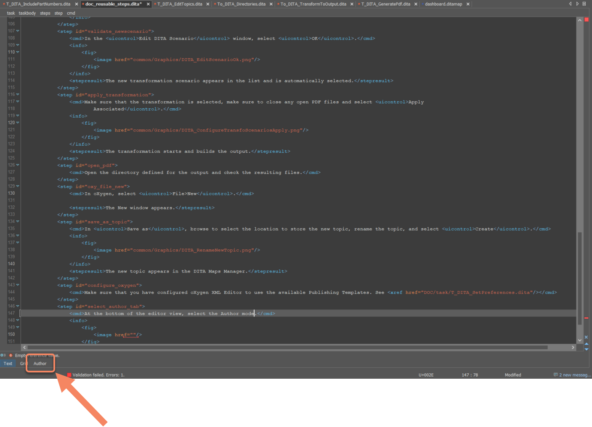
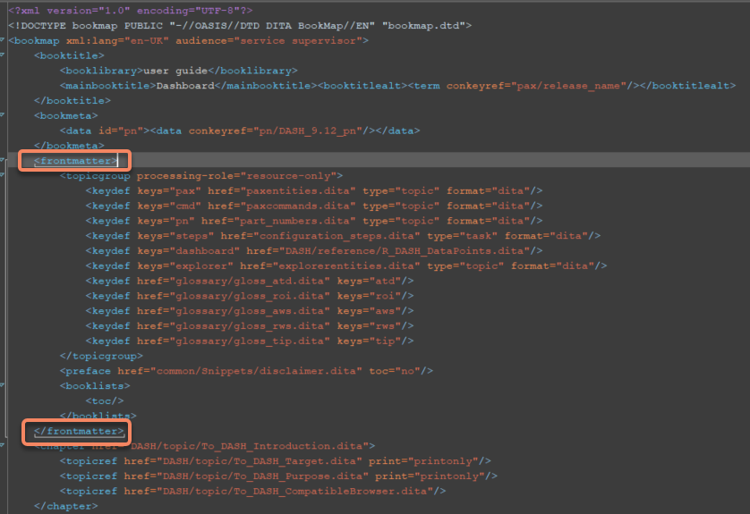

Update part numbers for each revision of a PDF document
Each PDF document provided as part of the PAX CHECKPOINT Screening Software is
assigned a part number. The part numbers are stored in the part_numbers.dita topic under
pax-solutions\src\EN.
For each new release, you need to generate a new part number for each document. For each revision of a document (adding new features, updating content for a new minor release), you need to update the part number.
The Excel file containing the list of documents and their corresponding part numbers appear.
In the PN column:
If you add a new document - Add a new row to create a new part number.
If you update a document - Update the revision letter of the existing document.
In the Revision column, insert the Revision letter.
For a new document, the revision number is A, for example, X310-00048A.
For an existing document, update to the next alphabetical letter, for example, X310-00048B.
In the Description Francais, add a description in French for the document, for example, 8.25_Manuel_Integration_Systeme_BHS.
In the Description Anglais, add a description in English for the document, for example, 8.25_Integration_Manual_BHS.
Close the document.
Update the part number to be displayed in the PDF file
In oXYgen XML Editor, select File > Open and browse to pax-solutions\src\EN and select part_numbers.dita.
The file contains tables with 3 columns:
Release - Software release version number.
Document - Title of the document.
Part Number - Identification number as defined in the PAX Checkpoint Screening Software- PN.xslx.
Update the topic.
If you add a new release, create a new table and fill it with the
required information, add a data tag in which you create an identifier, then
add the part number in between data tags, like in the following example:
<data id="RN_9.1_pn">X310-00080C / Revision C</data>
If you update a document, update the two revision letters inside the
data tags like in the following example <data id="RN_9.20_pn">X310-00080X
/ Revision X</data>.
Include the reference to the part_numbers.dita topic in the DITA Map file
Open oXygen XML Editor, and make sure that the DITA Maps Manager view is
displayed on the left of the window. If not, select Window > Show View > DITA Maps Manager.
From the DITA Maps Manager, select Browse > Open.
Select the .ditamap file corresponding to the PDF file that you want to
generate as described in the table.
The ditamap file opens in the DITA Maps Manager.
Double-click the root item of the ditamap.
The ditamap file opens in the editor.
At the bottom of the editor view, select the Author mode.

In the DITA Map, add a frontmatter tag containing a keydef tag with the path to
the reusable content file.

Inside the frontmatter tags, add a keydef tag with the path to the file containing the part numbers.

 The ditamap file opens in the editor.
The ditamap file opens in the editor.